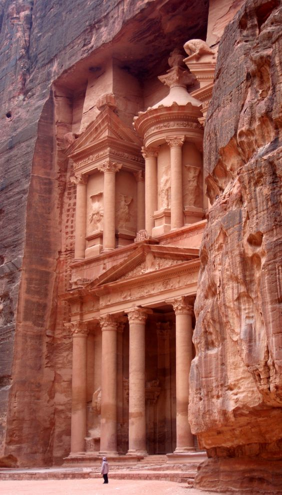

|  | Petra, originally known to the Nabataeans as Raqmu, is a historical and archaeological city in southern Jordan. The city is famous for its rock-cut architecture and water conduit system. Another name for Petra is the Rose City due to the color of the stone out of which it is carved. Established possibly as early as 312 BC as the capital city of the Arab Nabataeans, it is a symbol of Jordan, as well as Jordan's most-visited tourist attraction. The Nabataeans were nomadic Arabs who took advantage of Petra's proximity to regional trade routes to establish it as a major trading hub. The Nabataeans are also known for their great ability in constructing efficient water-collecting methods in the barren deserts and their talent in carving structures into solid rocks. Petra lies on the slope of Jebel al-Madhbah (identified by some as the biblical Mount Hor) in a basin among the mountains which form the eastern flank of Arabah (Wadi Araba), the large valley running from the Dead Sea to the Gulf of Aqaba. It has been a UNESCO World Heritage Site since 1985. The site remained unknown to the western world until 1812, when it was introduced by Swiss explorer Johann Ludwig Burckhardt. It was described as "a rose-red city half as old as time" in a Newdigate Prize-winning poem by John William Burgon. UNESCO has described it as "one of the most precious cultural properties of man's cultural heritage". Petra was named amongst the New7Wonders of the World in 2007 and was also chosen by the Smithsonian Magazine as one of the "28 Places to See Before You Die". |